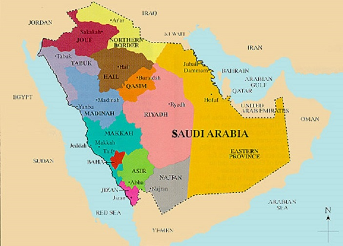
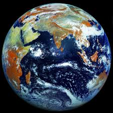
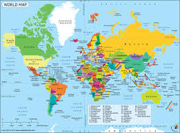
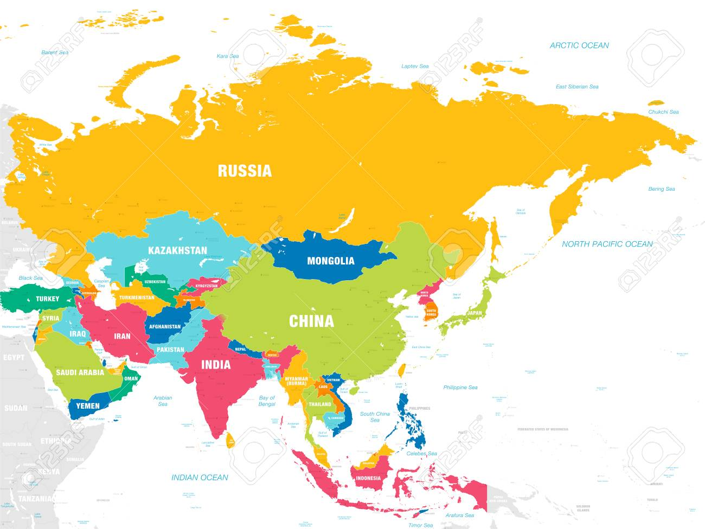

Saudi Arabia Information: Saudi Arabia is located in the Middle East. Saudi Arabia is bordered by and the Red sea to the west, Yemen and Oman to teh south, the Persian Gulf, Qatar
and United Arab Emirates to teh east, and Kuwait, Iraq, and Jordan to the north.

Explore Saudi Arabia Using Google Earth: Google Earth is a free program from Google that allows you to explore statlite imgages showing the cities adn landscapes of Saudi Arabia and all of Asia in fantastic detail. It works on your desktop computer, tablet, or mobile phone. The images in many areas are detailed enough that you can see houses, vehicles and even people on a city street. Google Earth is free and easy-to-use

Saudi Arabia on a World Wall Map: Saudi Arabia is one fo nearly 200 countries illusstrated on our Blue Ocean Laminated Map of teh World. This map shows a combination of political adn physical features. It includes country boundaries, major cities, major mountains in shaded relief, ocean depth in blue color gradient , along with many other features. This is a great map for student, schools, offices and anywhere that a nice map of the world is needed for education, display or decor.

Saudi Arabia On a large Wall Map of Asia: If you are interested in Saudi Arabia and teh geography of Asia our large laminated map of Asia might be just what you need. It is a large political map of Asia that also shows many of the continent's physical features in color or shaded relief. Major lakes, rivers, cities, roads, country boundaries, coastlines and surrounding islands are all shown on the map.